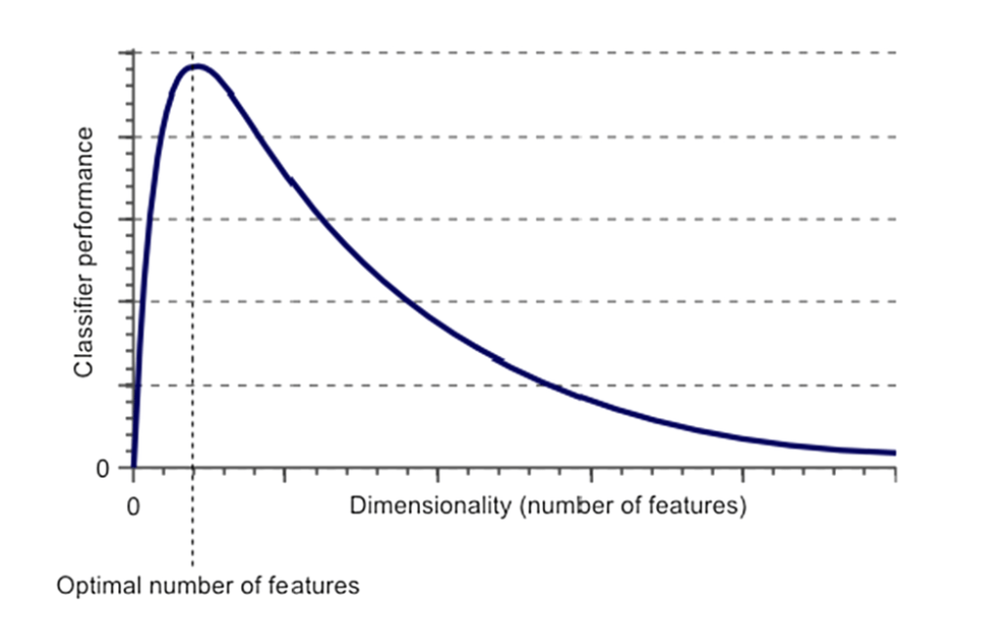

Principal Component Analysis is a widely used method to reduce the dimensionality of a dataset as well as to de-correlate it. It can also be used to weight the importance of variables. The PCA transforms variables into another set of variables called Principal Components.
Note
According to Hughes phenomenon, If the number of training samples is fixed and we keep on increasing the number of dimensions then the predictive power of our machine learning model first increases, but after a certain point it tends to decrease.

The Curse of Dimensionality
It takes the data and tries to find a direction (let’s say vector l) such that variance of points projected on vector l is maximum.
This is unsupervised learning. So we don’t need the label of that data set.
Let’s take an example without label.
Example 1
In our very basic fictious example, we have 3 variables.
english math art
english 630 450 225
math 450 450 0
art 225 0 900
# or using matrixcov(as.matrix(df))
english math art
english 630 450 225
math 450 450 0
art 225 0 900
df_py.cov()
english math art
english 630.0 450.0 225.0
math 450.0 450.0 0.0
art 225.0 0.0 900.0
Using matrices, another way to compute the covariance matrix is the following:
Remember, the positive covariance between math and english indicates that both subject covary in the same direction. And the null covariance between math and art indicates that there is no predictable relationship between the art and math subject.
Step 3: Compute the eigenvectors and eigenvalues of the covariance matrix
Recall that the eigenvectors satifies the following relationship:
It is serendipity that the first eigenvectors is the highest (aka explained most of the variance). The second one is the second highest and third one is last.
This is a 3D space with each eigen vector being orthogonal to the other. In an N-dimensional space, each eigenvectors are orthogonal.
To find the percentage of variance expalained by the eigenvalue (where is one of the dimension), we compute:
Step 4: Compute the new data frame based on the principal components.
To transform the eigenvectors to the new subspace we used:
is our initial data matrix. Our df in the above steps